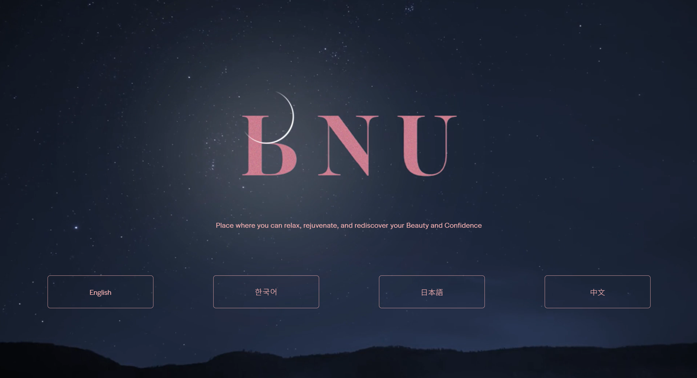
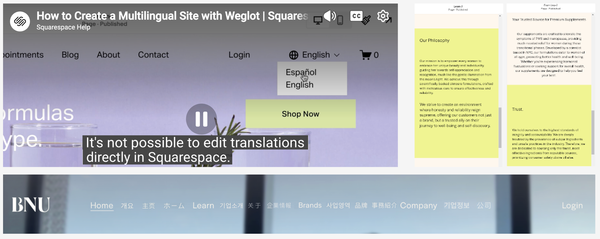
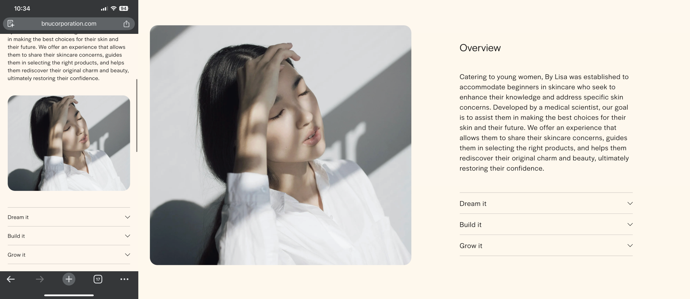

RESPONSIVE WEB · LOCALIZATION
Building a Multilingual Web System for BNU
PROBLEM
Expanding BNU's website to 4 languages exposed CMS constraints, creating complex navigation and mobile usability issues.
SOLUTION
A custom multilingual system with clearer navigation, responsive layouts, and a brand-focused landing page.
IMPACT
Reduced menu complexity by 50% and mobile layout issues by 40% across 4 localized experiences.

Challenge
To support BNU's U.S. and Asian audiences with a multilingual system, I identified three challenges:
- Automated translation added costs and limited content control
- Localized pages overcrowded the navigation bar
- Existing layouts did not adapt well across devices

CUSTOMER NEED
Navigate a clear and trustworthy experience in their preferred language across devices.
BUSINESS NEED
Support four localized experiences while maintaining content control, manageable costs, and brand consistency.
Final Design
01
Multilingual System
Created a landing page and clear navigation for each language, with a custom opening animation to strengthen BNU's brand identity.
02
Responsive Experience
Improved hierarchy, layouts, and responsive behavior across the website for a clearer, more consistent experience on desktop and mobile.

03
Localization
Localized the Chinese site by adapting content and typography to preserve readability and visual consistency.
Impact
The final system improved navigation and mobile usability while supporting four localized experiences.
“I enjoyed working with Siyu. She communicated quickly, took ownership of her work, and proactively found solutions.”
— Founder, BNU
“It's much clearer on my phone now, and I can switch to my preferred language right away. I like the opening animation too!”
— BNU Target User
Reflection
- Designing within CMS constraints taught me to balance user experience, technical feasibility, and business needs.
- Localization goes beyond translation. Navigation, responsive behavior, content, and visual consistency all need to work together.

Optimizing Post-Purchase Engagement for YNYG